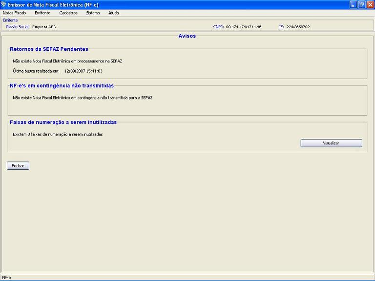

Software Emissor NF-e
Aviso
O Aviso do Software Emissor NF-e é a tela de
informações das pendências encontradas pelo
aplicativo.
Tais pendências são:
- NF-e's em processamento na SEFAZ ou com problemas na transmissão/com pendência (Retornos pendentes) que ainda não foram consultadas pela busca de retornos do Software
- NF-e's do tipo Contingência com DANFE impresso que ainda não foram transmitidas para a SEFAZ
- Faixas de Numeração a serem inutilizadas
Caso o emitente apresente algumas das condições acima, a
tela de aviso será mostrada logo após a escolha e
início deste emitente.
Exceção: caso o parâmetro de sistema Aviso de inutilização apenas mensal estiver
selecionado, a condição de Faixas a serem inutilizadas
só será considerada para apresentação ao
usuário no início do Emitente apenas no começo de
cada mês (baseado na data do sistema operacional). Entretanto,
caso o usuário acesse a tela de Aviso através do menu
(ver abaixo), serão apresentados as faixas a serem inutilizadas,
caso existam.
O usuário também poderá acessar a tela de Aviso através do Menu.
Pré-condição:
-Um emitente
deverá estar previamente iniciado.
- Acessar o menu: Sistema -> Aviso
- A tela de aviso do emitente será apresentada, informando se existem pendências.
Tela de Aviso com a pendência de inutilização:

Retornos pendentes da SEFAZ:
Caso existam NF-e's em processamento, será apresentado o botão para iniciar a Busca de Retornos de forma manual.
Clicando no botão, o usuário é redirecionado para a tela da função de Consultar pendências na SEFAZ, onde pode iniciar a busca.
NF-e's em contingência não transmitidas:
Caso existam NF-e's do tipo Contingência com DANFE impresso e
não transmitidas para a SEFAZ, será apresentado o
botão para visualizar tais NF-e's.
Clicando no botão, o usuário é redirecionado para
a tela de gerenciamento de NF-e's indicando as NF-e's com a
situação citada. A partir da tela de gerenciamento, o
usuário poderá selecionar as NF-e's e
transmití-las para a SEFAZ.
Faixas de numeração a serem inutilizar:
Caso
existam "buracos" na numeração da NF-e (ver Inutilização), será apresentado o botão para vizualizar as faixas a serem inutilizadas.
Clicando no botão, o usuário é redirecionado para
a
tela de Inutilização com todas as faixas encontradas para
inutilizar. O usuário então poderá selecionar as
faixas e inutilizá-las.